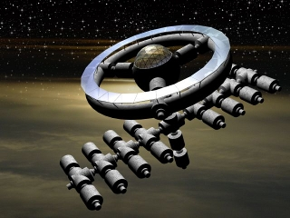

JDEG Collection Base JDEG Collection Base
High Jupiter Orbit Space Fortress One of the largest space stations in the Solar System, this station was the very first settled habitat outside the Earth Sphere, and is still maintained in well working order today. High above the massive gas giant in a safe orbit, there is no gravity here, but it is not far to the dangerous gasses below. Harvester fleets go from here to the gas giants stormy surface, gathering huge amounts of Helium 3 for it to be processed at this station. JDEG Collection Base  |